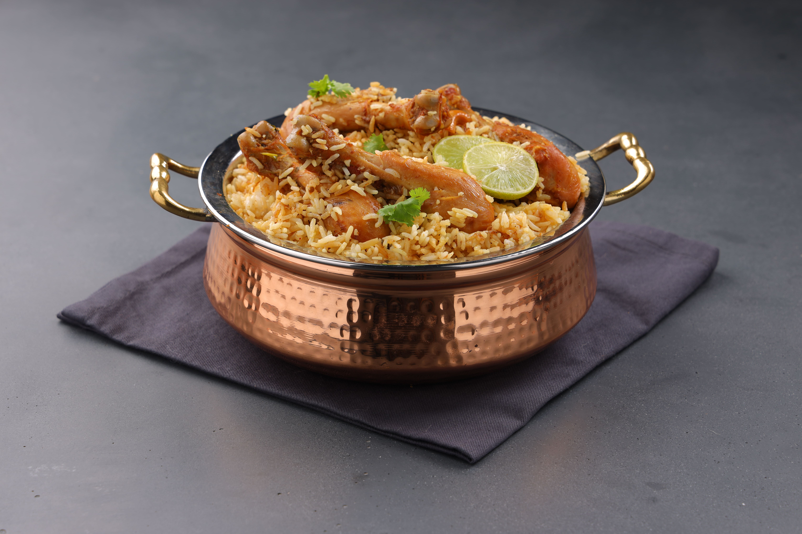
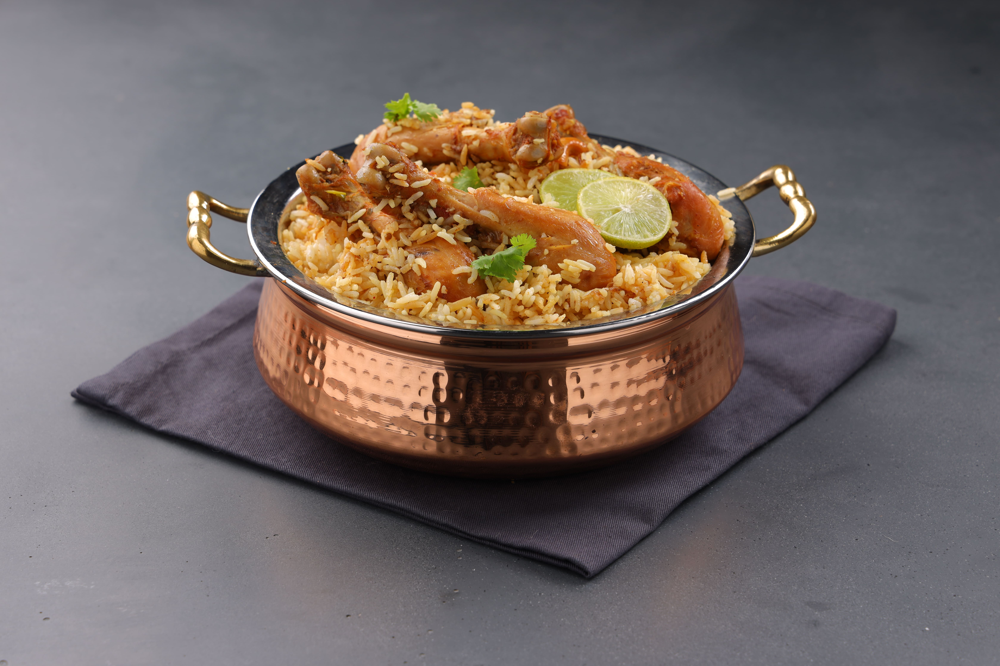

Biryani is a mixed rice dish popular in South Asia, made with rice, meat (chicken, goat, lamb, beef) or seafood (prawns or fish), and spices. To cater to vegetarians, the meat or seafood can be substituted with vegetables or paneer.[1] Sometimes eggs or potatoes are also added.[2]
One theory states that it originated from birinj (Persian: برنج), the Persian word for rice.[7][8] Another theory states that it was derived from biryan or beriyan (Persian: بریان), which means "to fry" or "to roast".[9][10][11] It may alternatively be related to the Persian word bereshtan (Persian: برشتن) which also means "to roast (onions)", as the dish is often prepared by flavouring rice with fried onions and meat, besides mild spices.
Biryani is one of the most popular dishes among the South Asian diaspora, although the dish is often associated with the region's Muslim population in particular.[3] Similar dishes are also prepared in Iran, Iraq, Myanmar, Thailand, and Malaysia.[4] Biryani is the single most-ordered dish on Indian online food ordering and delivery services, and has been labelled as the most popular dish overall in India.[5][6]The exact origin of the dish is uncertain, however, it has been suggested that it originated in Persia. In North India, different varieties of biryani developed.[8][12] According to the historian Lizzie Collingham, the modern biryani developed in the royal kitchens of the Mughal Empire (1526–1857) and is a mix of the native spicy rice dishes of South Asia and the Persian polao.[13] Indian restaurateur Kris Dhillon believes that the dish originated in Persia and was brought to South Asia by the Mughals.[14] Salma Hossein, whom the BBC has dubbed the "doyenne of Islamic cooking in India," shares a similar view, asserting that biryani came to South Asia from Persia even before the Mughal era. Food scholar Pushpesh Pant also challenges the Mughal-origin claim, stating that it originated in Iran and that "there is no evidence that biryani first came to this land with the Mughals. It is far more probable that it travelled with pilgrims and soldier-statesmen of noble descent to the Deccan region in South India".[15]
Another theory claims that the dish was prepared in South Asia before the first Mughal emperor Babur conquered India.[16] The 16th-century Mughal text Ain-i-Akbari makes no distinction between biryanis and pilaf (or pulao): it states that the word "biryani" is of older usage in India.[citation needed][17] A similar theory, that biryani came to India with Timur's invasion, appears to be incorrect because there is no record of biryani having existed in his native land during that period.[16] According to Pratibha Karan, who wrote the book Biryani, biryani is of Mughal origin, derived from pilaf varieties brought to the South Asian subcontinent by Arab and Persian traders. She speculates that the pulao was an army dish in medieval India. Armies would prepare a one-pot dish of rice with any available red meat. Over time, the dish became biryani due to different methods of cooking, with the distinction between "pulao" and "biryani" being arbitrary.[8][16] According to Vishwanath Shenoy, the owner of a biryani restaurant chain in India, one branch of biryani comes from the Mughals, while another was brought by the Arab traders to Malabar in South India.[18] There are various apocryphal stories dating the invention to Shah Jahan's time but Rana Safvi, the distinguished historian, says she could only find a recipe from the later Mughal period, from Bahadur Shah Zafar's time. It is not her claim that there was no biryani before that; just that she has not found a recipe. Other historians who have gone through texts say that the first references to biryani only appear around the 18th century.[19]
Another theory claims that the dish was prepared in South Asia before the first Mughal emperor Babur conquered India.[16] The 16th-century Mughal text Ain-i-Akbari makes no distinction between biryanis and pilaf (or pulao): it states that the word "biryani" is of older usage in India.[citation needed][17] A similar theory, that biryani came to India with Timur's invasion, appears to be incorrect because there is no record of biryani having existed in his native land during that period.[16] According to Pratibha Karan, who wrote the book Biryani, biryani is of Mughal origin, derived from pilaf varieties brought to the South Asian subcontinent by Arab and Persian traders. She speculates that the pulao was an army dish in medieval India. Armies would prepare a one-pot dish of rice with any available red meat. Over time, the dish became biryani due to different methods of cooking, with the distinction between "pulao" and "biryani" being arbitrary.[8][16] According to Vishwanath Shenoy, the owner of a biryani restaurant chain in India, one branch of biryani comes from the Mughals, while another was brought by the Arab traders to Malabar in South India.[18] There are various apocryphal stories dating the invention to Shah Jahan's time but Rana Safvi, the distinguished historian, says she could only find a recipe from the later Mughal period, from Bahadur Shah Zafar's time. It is not her claim that there was no biryani before that; just that she has not found a recipe. Other historians who have gone through texts say that the first references to biryani only appear around the 18th century.
more... 
